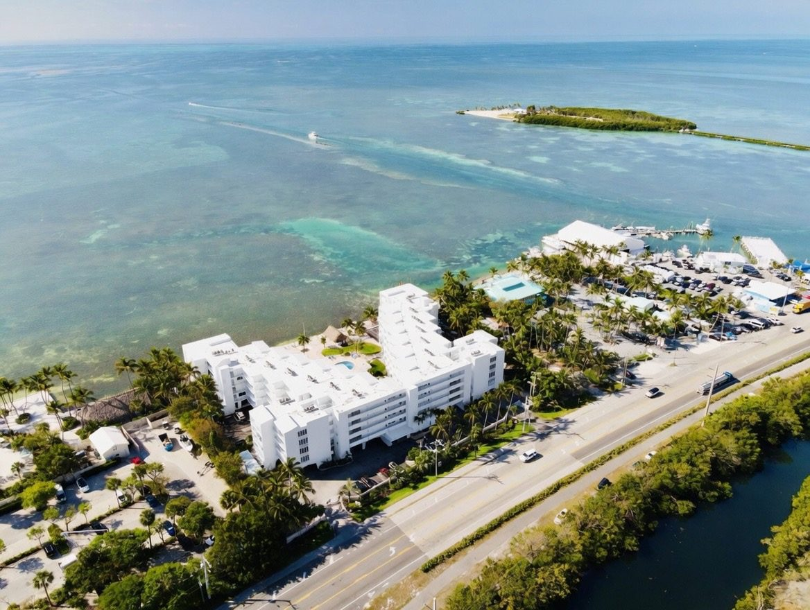

Welcome, guests!
Community amenities
- Heated community pool
- Hot tub
- Large shared tiki hut for gatherings
- Lots of lounge chairs for sunbathing
- Separate his and hers mini-gyms
- Indoor community area with kitchen
- Elevator
- Landscaped courtyard with palms and a pool deck
- Pier and water access, plus a kayak rack and ramp
- Shared grill area (please see the house rules below on cooking)
- Lobby book exchange (take a book, leave a book)
- Oceanfront setting with views of the Atlantic and Florida Bay
Compiled from the owners' community group and public rental listings. Kayak racks, pier, and boat ramp are visible in photos; the rules for guest use of the kayak racks, pier and boat ramp [to confirm].

House rules for guests
These come from the association's official Rules and Regulations. They help keep The Palms comfortable and safe for everyone. Thank you for following them.
Pool & hot tub
The pool is open 9 a.m. to 10 p.m. daily. Everyone uses the pool at their own risk. The rules state that children under 14 are not permitted to use the pool (per association rules). No pets are allowed at the pool.
Hot tub hours and rules: [to confirm]
Quiet & courtesy
Please avoid noise that disturbs your neighbors, and keep music, television and radio low enough that they do not annoy others. Children may not play or loiter in the corridors and stairways. [specific quiet hours, if any - to confirm]
Pets & smoking
Guests and visitors may not bring pets onto the property (per association rules). No pets are allowed at the pool or on the dock.
Smoking policy: [to confirm]
Parking
Parking areas are for cars, delivery vehicles and bicycles. Boats, trailers, trucks, campers and commercial vehicles are not allowed on the property unless parked in an area set aside for them. Please do not park where you block access to another unit, and please keep driveways, walkways and the kayak ramp clear. Repairs to vehicles are not allowed on the property. Parking can be tighter than usual while exterior maintenance work is under way. [guest parking / assigned spaces - to confirm]
Boats, kayaks & water gear
Please keep the kayak rack and access ramp clear of equipment and other obstructions. No pets are allowed on the dock. [rules for kayak racks, pier, boat ramp - to confirm]
Trash & recycling
Please tie trash tightly in a bag before putting it in a trash chute or designated trash area. The trash chutes may be used only between 9 a.m. and 10 p.m. Never put lit cigarette butts or ashes down the chute. Large boxes should be placed neatly along the wall in the disposal room.
Recycling: [to confirm]
Halls, stairs & balconies
Please keep sidewalks, entrances, stairways, corridors and halls clear, with nothing stored or left in them. Please do not hang towels, swimsuits or laundry from balconies, railings, windows or doors, and do not shake rugs or throw anything from a balcony or window.
Food, drinks & cooking
Food and beverages are meant to be enjoyed inside your unit or in the areas set aside for them. Cooking is not permitted in any common area of the property (per association rules). [where the designated food and drink areas are - to confirm]
Tiki hut
The tiki hut is a shared space, so please take your towels and belongings when you leave. If something needs attention, let the manager know (see Contact).
Safety & security
Please report any suspicious person or incident to the manager right away. Solicitors are not permitted in the building. When you leave your unit, close and lock all windows and doors.
Lobby book exchange
Take a book, leave a book. Shelves are organized alphabetically by author and by subject, so please re-shelve books where they belong.
Summary of the association's Rules and Regulations for guests. Your host or the manager can answer questions.
Check-in info
Arrival
Check-in / check-out times and instructions come from your rental manager. Many Palms rentals use self check-in. Your host registers you with the manager's office before you arrive (see House rules above). [how guests get gate / building access - to confirm]
Need help?
Questions about your stay: contact your host or rental manager. Building or community issues: see Contact.
Things to do in Islamorada
The Keys' "Village of Islands" is packed with fun. Listings for the Palms highlight: beach & swimming, boating, offshore and on-shore fishing, paddle boarding, snorkeling and diving, museums, wildlife reserves, art, shopping, historic tours and culinary adventures. See the full Things to Do locals' guide and the History of Islamorada.
Fishing & boating
Islamorada calls itself the Sport Fishing Capital of the World. Charters leave from marinas all along the Overseas Highway.
Snorkel & dive
Coral reef trips and the Florida Keys History of Diving Museum.
Paddle & kayak
Calm bayside waters and backcountry paddling, including state park islands such as Indian Key and Lignumvitae Key.
Feed the tarpon
Robbie's of Islamorada (Mile Marker 77.5) is famous for its tarpon feeding dock and marina.
Marine life
Theater of the Sea (around Mile Marker 84.5) is nearby, as is the Turtle Hospital in Marathon.
Sunsets & dining
Fresh seafood, key lime pie and sunsets over Florida Bay.
General local suggestions, not an official endorsement. [owner/board favorites and verified mile markers, hours - to confirm before publishing]